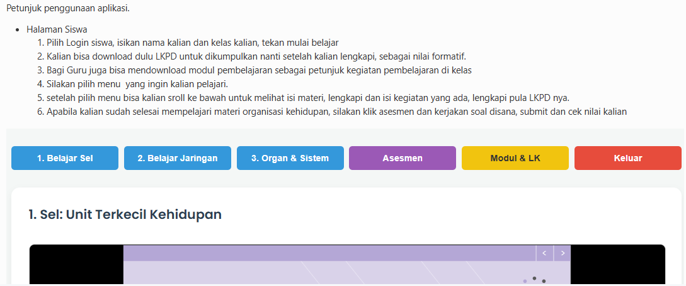

Teknik DNA Rekombinan
Salah satu pemanfaatan bioteknologi modern dalam bidang kesehatan adalah pembuatan insulin sintesis. Proses ini melibatkan plasmid bakteri dan gen penghasil insulin dari pankreas dengan teknik DNA rekombinan

Urutkan proses DNA rekombinan berikut
- Isolasi Gen dan Plasmid
- Pemotongan DNA (Restriksi)
- Penyambungan DNA / Ligasi
- Transformasi Sel Inang
- seleksi dan kultur bakteri rekombinan
- Ekstraksi dan Pemurnian (Purifikasi)